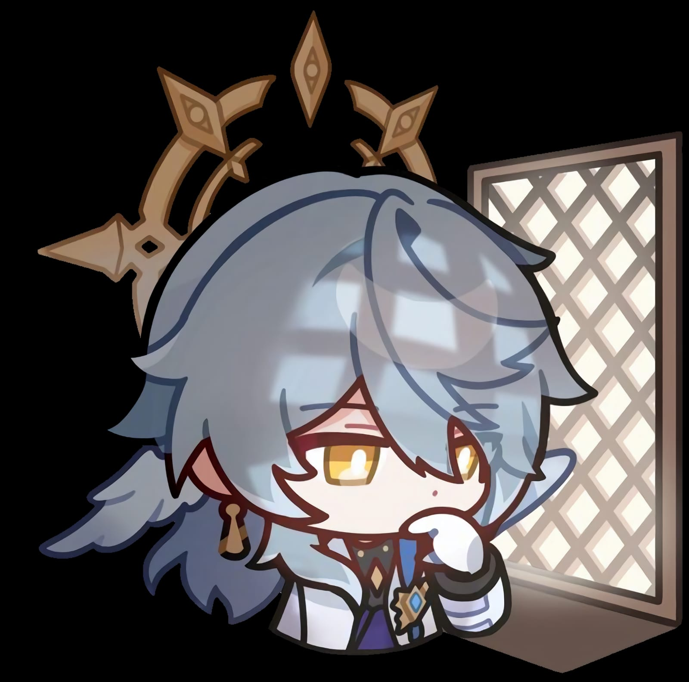

| NPC |
Halovian |
Order |
Oak Family (former head) |
Penacony |

Profile
Sunday is the former head of the Oak Family.[2] He was the organizer of the Charmony Festival and a representative of The Family of Penacony.
Sunday comes off as a dignified, benevolent, and rational individual. He is revered, seemingly determined and just. However, he is also prideful and cunning, willing to manipulate and lie in order to reach his goal of granting Robin's wish of a world where everyone can attain peace.
He believes that a society of "survival of the fittest" is not capable of reaching true happiness, and thus wished to use the Order to create a dream where people were free from the harshness of reality at the cost of never waking up. His intentions are not fueled by malice, as he genuinely wishes to protect people from suffering, simply his perspective on humanity and human nature is pessimistic.He believes that people have an innate desire to escape from their pain, and acknowledges that the reality he wishes for is only an escape. However, he does not view escaping reality as something to be ashamed of, despite the fact that people would not be able to grow from their struggles in a painless dream.
His beliefs are likely the result of the Dreammaster indoctrinating him into following the Order from a young age, as Robin notes the scripture in his diary are not things she was taught.
Story
During the events of Penacony's Trailblaze Missions, Sunday initially meets with IPC representative Aventurine though a tip by Dr. Ratio, alerting him to his tricks in an attempt to swindle the Cornerstones gifted to him. Sunday blackmails Aventurine into helping him find the true "traitors" to the Family, Gallagher and The Watchmaker, though after Aventurine is supposedly defeated by the Astral Express, he discovers a link between them and Something Unto Death. After Robin refuses to assist in bringing Order, Sunday decides to do so in his sister's place, using the Harmonic String Dominicus to transform into the "Harmonious Choir" The Great Septimus. He initially manages to trap the Astral Express in Ena's dream under the pretense that they had defeated him, but Black Swan notices a fatal flaw in the dream through Misha, allowing the Astral Express to fight and defeat him for good.
Following his defeat and the discovery of the extent of his plot, Sunday is placed under arrest by The Family, but Robin secretly negotiates with Jade for his release. Sunday is skeptical of Jade's motives and refuses to accept her "charity," leaving his current status unknown.